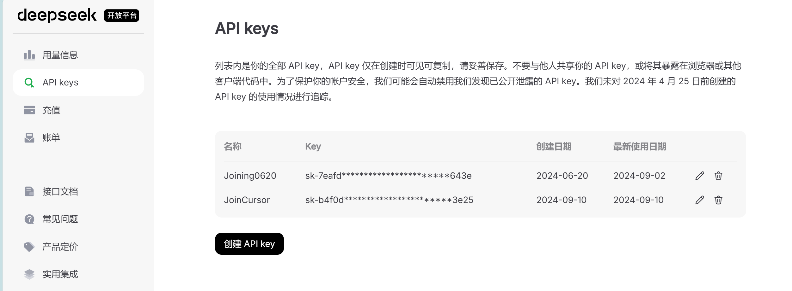

AI编程
目录¶
- 如何在 Cursor 中配置 Deepseek API
- 获取 API Key
- 配置 Cursor
- 如何组织中型 Python 项目
- 项目示例
- 使用单元测试
- 编写代码前的准备
- 关键内容规划
- 模块划分与职责
- 项目架构与文档
- 数据集处理
- 总功能文档维护
- 总结
如何在 Cursor 中配置 Deepseek API¶
在本节中，我们将详细介绍如何在 Cursor 中配置 Deepseek API，包括获取 API Key 和配置 Cursor 的具体步骤。
1. 获取 API Key¶
步骤一：注册 Deepseek 账号¶
- 访问 DeepSeek 官网。
- 点击“注册”按钮，填写必要信息完成注册。
- 注册成功后，登录您的 DeepSeek 账号。
步骤二：获取 API Key¶
- 登录后，导航至 DeepSeek 开放平台。
- 在 API Keys 页面，点击“生成新密钥”按钮。
- 系统将生成一个唯一的 API Key，请 务必 复制并安全保存，因为系统只会显示一次。

注意事项： - 请妥善保管您的 API Key，避免泄露。 - 如果丢失，请重新生成新的 API Key。
2. 配置 Cursor¶
步骤一：打开 Cursor 设置¶
- 打开 Cursor 应用程序。
- 导航至
File > Preferences > Cursor Settings。
步骤二：配置模型¶
- 在 Model 选项中，关闭所有 GPT 系列模型。这是为了避免后续验证失败。

- 点击 Add model，输入模型名称：
deepseek-chatdeepseek-coder（20240910 版本）
备注：这两个模型版本将引导至
deepseek-v2.5。
步骤三：输入 API Key 和设置 Base URL¶
- 将之前获取的 Deepseek API Key 复制到 OpenAI API Key 字段中。
- 在 Override OpenAI Base URL 字段中输入：
https://api.deepseek.com/v1提示：不加
/v1也可以，但建议使用完整 URL 以确保兼容性。
步骤四：验证配置¶
- 完成上述步骤后，点击 Verify 按钮。
- 若验证通过，即表示配置成功。
常见问题及解决方案：
- 验证失败：
- 确认 API Key 是否正确粘贴。
- 检查 Base URL 是否输入正确。
-
确保网络连接正常。
-
模型未关闭：
- 确保所有 GPT 系列模型均已关闭，否则会影响 Deepseek 的正常使用。
如何组织中型 Python 项目¶
组织一个中型 Python 项目需要良好的项目结构、清晰的模块划分以及有效的测试策略。以下是详细的指导步骤。
项目示例¶
参考项目：mini_Pytorch
- 简介：一个简化版的 PyTorch 实现，适合学习和实验。
- 特点：
- 清晰的项目结构
- 完备的文档
- 单元测试覆盖
使用单元测试¶
为什么要使用单元测试¶
- 确保代码质量：及时发现并修复代码中的错误。
- 提高代码可靠性：通过测试确保代码在不同情况下都能正确运行。
- 便于维护和扩展：测试用例作为代码的文档，帮助理解代码逻辑。
最佳实践：
- 每个功能模块对应一个测试文件。
- 测试覆盖常见边界情况和异常情况。
- 定期运行测试，确保代码变更不破坏现有功能。
编写代码前的准备¶
在开始编写代码之前，需要明确以下几点：
明确数学问题的概念、约束和目标¶
- 概念：理解所要解决的问题，相关理论和公式。
- 约束：项目的限制条件，如时间、资源、技术栈等。
- 目标：项目最终要实现的功能和效果。
输出数学符号表和约束公式表¶
- 数学符号表：列出项目中使用的所有数学符号及其定义。
- 约束公式表：明确项目涉及的所有约束条件和公式。
示例：
| 符号 | 定义 |
|---|---|
| \(x\) | 输入向量 |
| \(y\) | 输出向量 |
| 公式 | 说明 |
|---|---|
| \(y = Wx + b\) | 线性变换公式 |
关键内容规划¶
确保项目的关键内容清晰、有序：
- 输入数据集：明确数据的来源、格式和处理方式。
- 输出结果：定义最终输出的形式和标准。
- 中间处理：规划数据处理和转换的步骤。
模块划分与职责¶
将项目划分为若干模块，每个模块有明确的职责和接口：
确定大的模块¶
- 数据处理模块：负责数据的加载、清洗和预处理。
- 模型构建模块：定义和构建机器学习模型。
- 训练模块：负责模型的训练和优化。
- 评估模块：评估模型的性能和效果。
- 工具模块：包含辅助功能，如日志记录、配置管理等。
划分模块职责，输入与输出¶
- 数据处理模块：
- 职责：加载和预处理数据。
- 输入：原始数据集。
-
输出：处理后的数据。
-
模型构建模块：
- 职责：定义模型架构。
- 输入：配置参数。
- 输出：定义好的模型实例。
项目架构与文档¶
输出项目架构图¶
使用 UML 图或其他工具绘制项目的架构图，展示各模块之间的关系和交互。
编写各代码文档¶
为每个模块编写详细的文档，包括：
- 模块说明：模块的目的和功能。
- 接口定义：模块提供的接口和调用方式。
- 使用示例：如何使用该模块的示例代码。
数据集处理¶
从输入数据集开始创建¶
- 明确关键节点的输入输出数据格式：
- 输入：定义数据的结构，如 CSV、JSON 等。
-
输出：处理后的数据格式，如张量、数组等。
-
完成中间的代码组件：
- 数据加载器：负责读取和解析数据。
- 数据转换器：进行必要的数据转换和处理。
示例：
import pandas as pd
def load_data(filepath):
data = pd.read_csv(filepath)
return data
def preprocess_data(data):
# 数据清洗和预处理
data = data.dropna()
return data
总功能文档维护¶
记录目标与项目代码架构¶
- 目标：简要描述项目的总体目标和期望成果。
- 代码架构：详细记录项目的代码结构，包括模块、子模块及其职责。
示例：
# 项目目标
本项目旨在实现一个简化版的机器学习模型，以学习和验证基本的模型训练和评估流程。
# 代码架构
- **data/**
- `load.py`: 数据加载模块
- `preprocess.py`: 数据预处理模块
- **models/**
- `model.py`: 模型定义模块
- **train/**
- `train.py`: 模型训练模块
- **evaluate/**
- `evaluate.py`: 模型评估模块
- **utils/**
- `logger.py`: 日志记录模块
- `config.py`: 配置管理模块